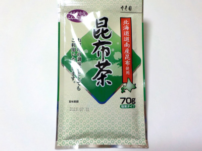

寿老園の昆布茶。
2022/11/07

この昆布茶は70g入りで、湯呑1杯2g使用なので35杯分あります。
他社のスティックタイブの昆布茶とどちらを買おうか迷ったんですが、こちらの方が経済的だし、濃さが調節出来るし、料理に使いやすそうだと思い買いました。
私は大きめのカップに3gくらい入れて飲んでいます。
お茶って湯呑茶碗で飲むように分量が表示されていますが、私は湯呑茶碗持ってないです。持ってない人向けに使用量が書いてあるといいなって思いました。
広島県広島市南区宇品東7丁目8-25
2022/11/07

この昆布茶は70g入りで、湯呑1杯2g使用なので35杯分あります。
他社のスティックタイブの昆布茶とどちらを買おうか迷ったんですが、こちらの方が経済的だし、濃さが調節出来るし、料理に使いやすそうだと思い買いました。
私は大きめのカップに3gくらい入れて飲んでいます。
お茶って湯呑茶碗で飲むように分量が表示されていますが、私は湯呑茶碗持ってないです。持ってない人向けに使用量が書いてあるといいなって思いました。